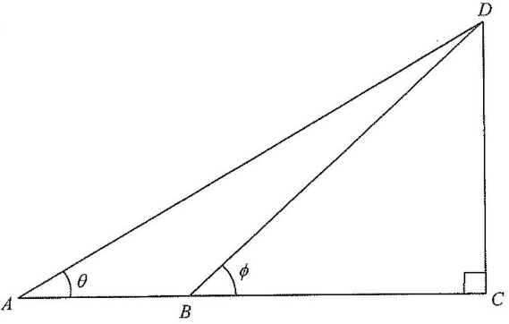

題解
圖：$\triangle ACD$ 中 $B$ 在 $AC$ 上；$\angle CAD=\theta$、$\angle BDC=\phi$，故 $\dfrac{BC}{AD}=\dfrac{\sin\theta}{\tan\phi}$（題解繪）

圖：題解附圖（原試卷）
第 1 步
在 $\triangle BCD$ 表示 $BC$
正切
$\tan\phi=\dfrac{DC}{BC}$
$\angle BCD=90^{\circ}$。
$BC=\dfrac{DC}{\tan\phi}$。
第 2 步
在 $\triangle ACD$ 表示 $AD$
$\sin\theta=\dfrac{DC}{AD}\Rightarrow AD=\dfrac{DC}{\sin\theta}$。
第 3 步
相除
$\dfrac{BC}{AD}=\dfrac{DC/\tan\phi}{DC/\sin\theta}=\dfrac{\sin\theta}{\tan\phi}$，故選 A。
答案A $\dfrac{\sin\theta}{\tan\phi}$